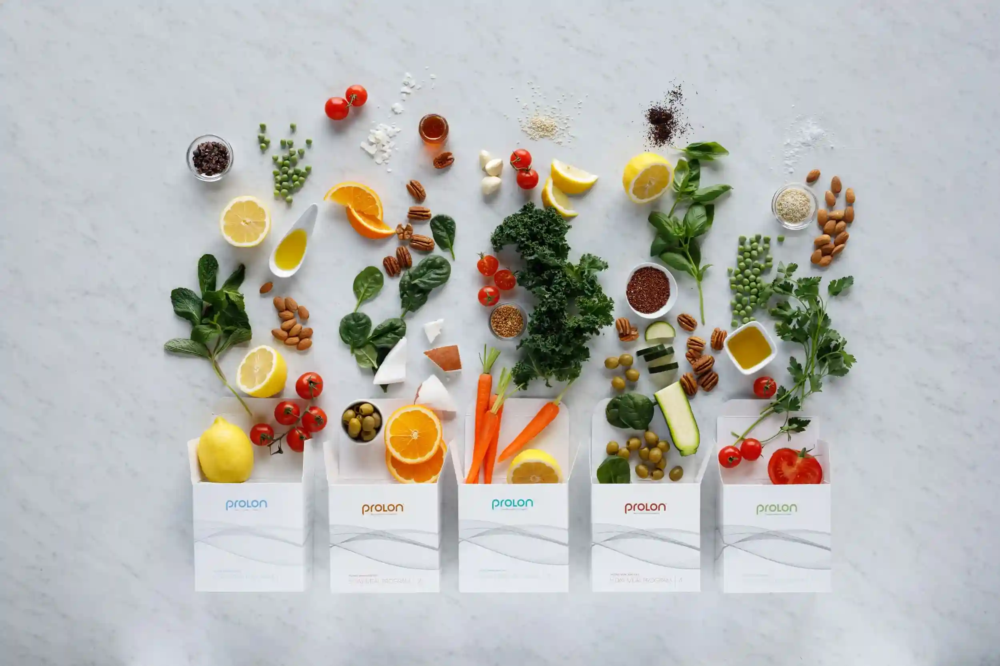

ProLon® Kit: Dieta Mima Digiuno di 5 Giorni per la Longevità
Scopri il programma nutrizionale di 5 giorni, scientificamente provato, che imita il digiuno.
Iscriviti per ricevere sconti e promozioni esclusive
Benefici del ProLon®: Come il tuo corpo trae vantaggio dalla Dieta Mima Digiuno
Sviluppato scientificamente per la rigenerazione cellulare e la salute metabolica
Attivare l'Autofagia
Il programma nutrizionale di 5 giorni promuove l'auto-pulizia cellulare e supporta i processi di rigenerazione naturale del corpo.
Salute Metabolica
ProLon® può ottimizzare il metabolismo, migliorare la sensibilità all'insulina e contribuire al mantenimento di livelli sani di zucchero nel sangue.
Chiarezza Mentale
Molti utenti riportano una maggiore concentrazione, una migliore funzione cognitiva e una mente più lucida durante e dopo il Programma.
Ringiovanimento Cellulare
La Dieta Mima Digiuno supporta il rinnovamento delle cellule e può contribuire a un aspetto più giovane.
Nutrizione per la Longevità
Basato sulla ricerca sulla longevità, ProLon® è stato sviluppato per promuovere un invecchiamento sano e migliorare la qualità della vita.
Vitalità Fisica
Supporta il mantenimento della massa muscolare durante il digiuno e promuove un aumento del livello di energia dopo il completamento del Programma.
Perché ProLon® è la Scelta Migliore per la Dieta Mima Digiuno
ProLon® è il primo e unico programma di Dieta Mima Digiuno scientificamente sviluppato al mondo. È il risultato di oltre due decenni di ricerca ed è stato testato in studi clinici per offrire i benefici del digiuno, continuando a mangiare in modo controllato. Per approfondire come funziona la Dieta Mima Digiuno ProLon®, i benefici, la durata e le controindicazioni, consulta la nostra sezione FAQ con le risposte alle domande più frequenti.
100% Vegetale e Naturale
Tutti i pasti sono composti da ingredienti vegetali di alta qualità senza additivi artificiali
Ricerca Clinica Approfondita
Oltre 20 anni di ricerca e numerosi studi clinici ne attestano l'efficacia
Semplice e Strutturato
Tutti i pasti per 5 giorni sono preparati – nessun conteggio di calorie, nessuna preparazione necessaria
Il Programma di Dieta Mima Digiuno di 5 Giorni
Ogni giorno è pianificato con precisione per risultati ottimali
Giorno 1: Inizia la Trasformazione
Giorni 2-3: Brucia Grassi
Giorno 4: Pulizia Cellulare
Giorno 5: Rinnovamento

Inizia la Tua Trasformazione di 5 Giorni
Sperimenta il potere della Dieta Mima Digiuno e attiva il tuo ringiovanimento cellulare
Ricevi sconti e promozioni esclusive
INIZIA ORADieta Mima Digiuno ProLon®
ProLon®: Base Scientifica Solida – Oltre 20 Anni di Ricerca
Sviluppato nelle principali università e testato in studi clinici
Dieta Mima Digiuno Sviluppata Scientificamente
ProLon® si basa su una ricerca pionieristica nel campo della nutrizione per la longevità ed è stato sviluppato in istituzioni rinomate. Il Programma utilizza macro e micronutrienti precisamente calibrati per indurre il corpo in uno stato di digiuno, fornendo al contempo nutrienti essenziali.
Studi clinici hanno dimostrato che la Dieta Mima Digiuno può avere effetti positivi sui marcatori metabolici, sulla salute cellulare e sul benessere generale (Vedi le testimonianze).
Cosa Dicono gli Utenti di ProLon®
Esperienze Reali con la Dieta Mima Digiuno
Ho provato il Programma ProLon per la prima volta e ne sono assolutamente entusiasta. I cinque giorni sono stati sorprendentemente piacevoli – non ho mai avuto la sensazione di fame. Dopo, mi sono sentito rigenerato, pieno di energia e mentalmente più lucido che mai.
Essendo una persona che si occupa intensamente di longevità, ero curioso della Dieta Mima Digiuno. ProLon ha superato le mie aspettative. Dopo la settimana, noto una maggiore chiarezza mentale e mi sento complessivamente più vitale. Il Programma è ben strutturato e facile da seguire.
Sono entusiasta di questo concetto di Dieta Mima Digiuno! Tutti i pasti sono preparati, non devi preoccuparti di nulla. Le zuppe hanno un buon sapore e i risultati parlano da soli. Sto già pianificando il mio prossimo ciclo ProLon tra tre mesi.
All'inizio ero scettico se sarei riuscito a resistere per cinque giorni con un apporto calorico ridotto. Ma ProLon lo rende davvero facile. Le porzioni sono sufficienti, la varietà è sorprendente e non ho mai avuto la sensazione che mi mancasse qualcosa. Ottima esperienza!
Dopo anni di digiuno intermittente, volevo provare qualcosa di nuovo. Il programma di Dieta Mima Digiuno ProLon non mi ha deluso. La base scientifica dietro è particolarmente impressionante. Si nota che ci sono anni di ricerca dietro.
Ho provato ProLon su consiglio del mio medico e sono contento di averlo fatto. I cinque giorni sono stati impegnativi, ma fattibili. Dopo, mi sono sentito rinato – più leggero, più lucido e pieno di energia. Lo ripeterò sicuramente!
Domande Frequenti su ProLon®
Qui trovate le risposte alle domande più frequenti sul programma di Dieta Mima Digiuno. Se avete altre domande, non esitate a contattarci.
Il digiuno intermittente è un approccio alimentare che alterna periodi di digiuno a finestre di alimentazione. Non indica cosa mangiare, ma quando mangiare, aiutando a strutturare i pasti nel corso della giornata.
Per chi si chiede come funziona il digiuno intermittente, durante le ore di digiuno l’organismo riduce l’apporto calorico e utilizza le riserve energetiche. A differenza del digiuno intermittente tradizionale, la Dieta Mima Digiuno ProLon® offre un percorso strutturato con apporto nutrizionale controllato, permettendo di continuare a mangiare.
ProLon® fornisce al vostro corpo nutrienti vegetali precisamente calibrati che imitano lo stato di digiuno, fornendo al contempo energia essenziale. La speciale composizione di macro e micronutrienti pone il vostro corpo in uno stato metabolico simile a quello del digiuno, pur continuando a mangiare.
ProLon® è adatto per adulti sani che desiderano supportare la propria salute cellulare e sperimentare i Benefici del digiuno senza rinunciare completamente al cibo. È ideale per le persone interessate alla Nutrizione per la Longevità e che preferiscono un approccio scientificamente fondato. Donne in gravidanza, in allattamento e persone con determinate condizioni mediche preesistenti dovrebbero consultare un medico prima dell'uso.
Il Programma ProLon può attivare l'Autofagia, promuovere la salute metabolica, migliorare la sensibilità all'insulina, aumentare l'energia e migliorare il benessere generale. Molti utenti riportano chiarezza mentale, miglioramento della qualità della pelle e un aumentato senso di vitalità dopo il completamento del Programma.
Il Kit ProLon contiene tutti i pasti per 5 giorni: zuppe vegetali, Barrette Energetiche, snack come Olive e Cracker di Cavolo Nero, Tisane alle Erbe e Integratori Alimentari. Ogni giorno è confezionato in una scatola separata, in modo da sapere esattamente cosa mangiare e quando. Nessun conteggio di calorie, nessuna preparazione necessaria.
La frequenza dipende dai vostri obiettivi personali. Molte persone eseguono ProLon® una volta al mese o ogni tre mesi. Per risultati ottimali, gli esperti raccomandano almeno tre cicli all'anno. In caso di dubbi, consultate un professionista della salute per creare un piano individuale.
Durante il Programma ProLon è raccomandata attività fisica leggera come passeggiate, yoga dolce o stretching. Gli allenamenti intensi dovrebbero essere evitati, poiché il vostro corpo è in uno stato di ridotto apporto calorico. Dopo il completamento del Programma, potete riprendere la vostra normale routine di allenamento.
Sì, ProLon® è 100% vegetale ed è quindi adatto sia ai vegani che ai vegetariani. Tutti i pasti sono composti da ingredienti vegetali di alta qualità senza prodotti animali, additivi artificiali o conservanti.
Cos’è la Dieta Mima Digiuno
Un approccio nutrizionale strutturato che imita gli effetti del digiuno, senza rinunciare ai nutrienti essenziali.
Dieta Mima Digiuno
La Dieta Mima Digiuno è un protocollo nutrizionale di 5 giorni sviluppato per simulare gli effetti metabolici del digiuno completo, fornendo al contempo nutrienti mirati.
Differenza con il Digiuno Intermittente
A differenza del digiuno intermittente, la Dieta Mima Digiuno segue una struttura precisa e controllata, riducendo improvvisazioni.
Programma Strutturato
Scopri come funziona ProLon e perché è considerato un programma di digiuno strutturato e guidato.
Hai Ancora Domande? Siamo Qui per Aiutarti!
Scopri di più sul programma di Dieta Mima Digiuno ProLon® sul sito ufficiale.
VISITA IL SITO UFFICIALE PROLON®✓ Programma originale ProLon® – Dieta Mima Digiuno